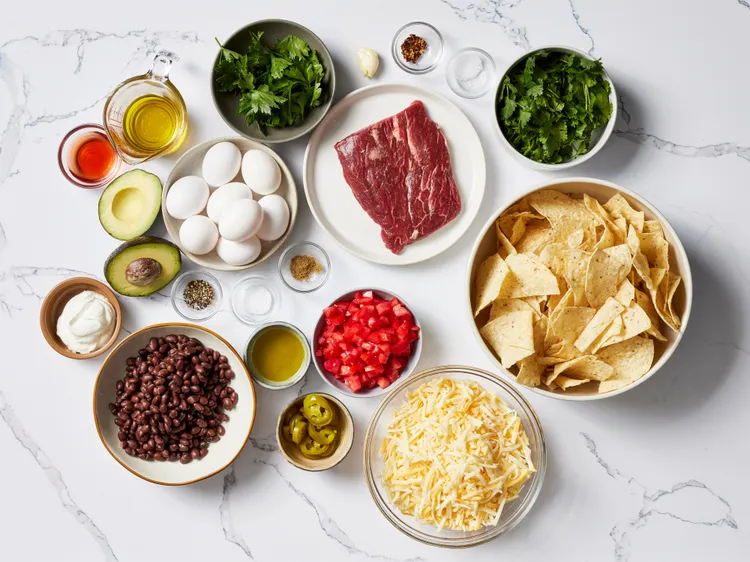
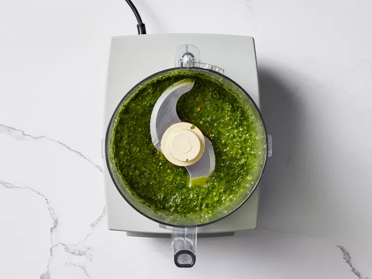

Home
Breakfast Nachos

Description
These breakfast nachos are a play on steak and eggs and they're out of this world.
Salty tortilla chips are layered with sliced seared flat iron steak, eggs, beans, and cheese,
broiled, dressed with everything else nacho, then finished with a zingy chimichurri sauce.
Ingredients
Chimichurri
- 3/4 cup packed fresh cilantro leaves and tender stems
- 1/2 cup loosely packed fresh flat-leaf parsley leaves and tender stems
- 1 clove garlic, coarsely chopped
- 1 1/2 tablespoons red wine vinegar
- 1/4 teaspoon crushed red pepper
- 1/4 teaspoon kosher salt
- 1/4 cup extra-virgin olive oil
Nachos
- 1 (8 ounce) flat iron steak, patted dry
- 3/4 teaspoon kosher salt, divided
- 1/2 teaspoon ground black pepper, divided
- 1/2 teaspoon ground cumin (optional)
- 2 tablespoons olive oil
- 8 large eggs
- 1 (11 ounce) package tortilla chips (such as Tostitos®)
- 2 (8 ounce) packages shredded Mexican cheese blend (such as Tilamook®)
- 1 (15 ounce) can black beans, drained and rinsed
- 1 cup chopped plum tomatoes
- 1 avocado, chopped
- 1/2 cup drained pickled jalapeno slices
- 1/2 cup sour cream, or as needed
Directions
Step 1
Gather all ingredients.

Step 2
For chimichurri: Place cilantro, parsley, garlic, vinegar, crushed red pepper, and
salt in a small food processor; pulse until finely chopped, about 10 pulses.
With processor running, pour oil through food chute, and process until fully incorporated,
about 20 seconds; set aside.
